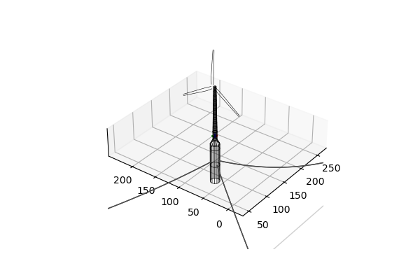
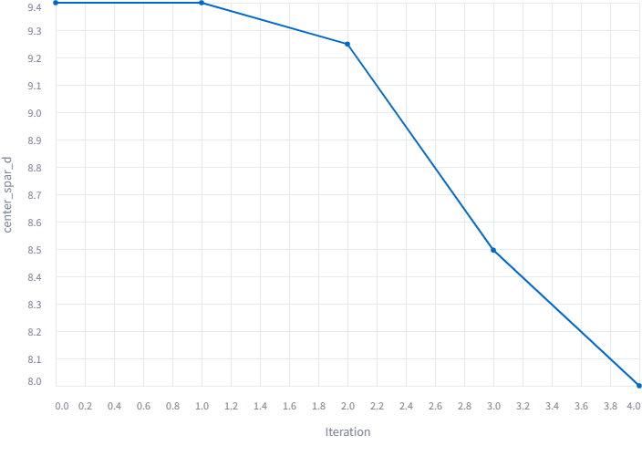
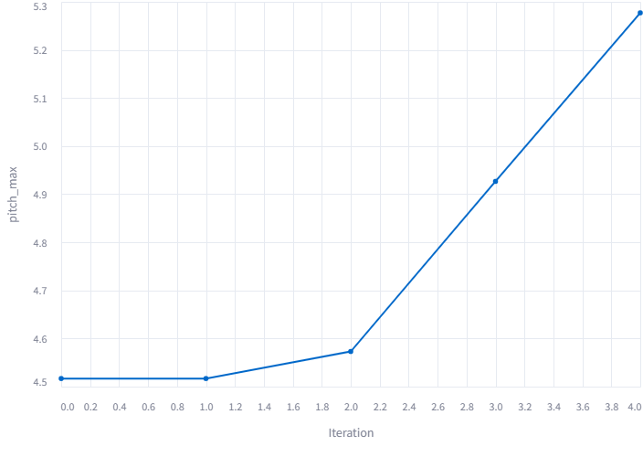
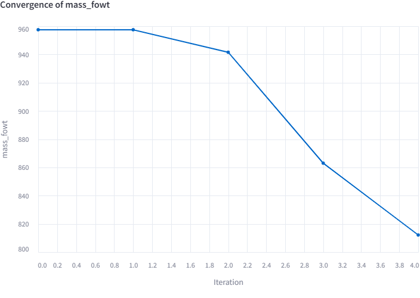

Example-1
Spar-buoy Optimization
Open a local folder in your machine, and copy the
design_file.yaml from the example>spar_buoy
folder present in RAFT-Opt repository. This example consists of
the 5MW OC3-Hywind spar buoy design. To keeps things simple
let’s just optimize the platform geometry. The setup file for this
problem is given below:
User Input File
platform:
optimize: True
update_stability: True
design_variables:
center_spar_d: 9.4
center_spar_h: 130
secondary_design_variables:
l_fill_0: 29
l_fill_1: 29
bounds_design_variables:
center_spar_d: [8., 15.]
center_spar_h: [85, 130]
bounds_secondary_design_variables:
l_fill_0: [0.0, 29.0]
l_fill_1: [0.0, 29.0]
outputs:
case_metrics: ['surge_max', 'sway_max', 'heave_max', 'roll_max', 'pitch_max', 'yaw_max', 'Mbase_max', 'AxRNA_max']
fowtList: ['sway', 'heave', 'roll', 'pitch', 'yaw']
inequality_constraints:
pitch_max: [-10.0, 10.0]
mooring:
optimize: False
update_stability: False
design_variables: None
outputs: None
inequality_constraints: None
objective_function: ['mass_fowt']
driver_information:
tolerance: 0.01
algorithm: SLSQP # Currently SLSQP, ALPSO, Diff_GA and COBYLA are supported in the framework
recorder_file_name: results.sql # Feel free to change the name of the file where values of all the design variables, objective functions and constraints are stored
The only inequality constraints is pitch needs to be higher
than -10 degrees but lower than 10 degrees for a FOWT.
Since we are not interested in optimizing the mooring line
configuration optimize and update_stability are set
to be False. The objective_function we would like
to minimize is the overall mass of the FOWT system.
Calcuvate
Now let’s take a look at the code logic of calcuvate.py file.
The aim of this file is to calculate the design for the next Optimization
iteration based on the values of design_variables and secondary_design_variables
from he current iteration. So we want to update the platform
geometry and fairlead positions (since the coordinates depend on the spar diameter).
So first let’s go ahead and define the function calcuvate()
that contains the code logic as shown below:
def calcuvate(design, x_platform, x_mooring=None):
center_spar = design['platform']['members'][0]
ms = design['mooring']
center_spar = _updateColumns(center_spar, x_platform)
ms = _updateMoorings(center_spar, ms)
design['platform']['members'][0] = center_spar
design['mooring'] = ms
return (design)
Now we define the function _updateColumns() to update the geometry of
the platform as shown below:
def _updateColumns(center_spar, x_platform):
freeboard = 10
## Geometry of the platform
center_spar['d'][0] = x_platform['center_spar_d']
center_spar['d'][1] = x_platform['center_spar_d'] # adjusting the diamter of column of the spar
center_spar['d'][2] = x_platform['center_spar_d']
center_spar['d'][3] = x_platform['center_spar_d']
center_spar['rA'][2] = -x_platform['center_spar_h'] + freeboard # adjusting the z coordinate of the keel
center_spar['stations'][0] = -x_platform['center_spar_h'] + freeboard
center_spar['stations'][1] = center_spar['stations'][0] + 30.
center_spar['stations'][2] = center_spar['stations'][1] + 30.
center_spar['cap_stations'] = [center_spar['stations'][0]]
## Adjusted l_fill values that ensure static stability
center_spar['l_fill'][0] = x_platform['l_fill_0']
center_spar['l_fill'][1] = x_platform['l_fill_1']
return (center_spar)
Once we have updated the platform geometry we now
define the function _updateMoorings() to update the
fairlead positions based on the modified spar geometry.
def _updateMoorings(center_spar, ms):
z_fair_fraction = 70/120 # ratio of z_fairlead and z_keel is kept constant
depth = ms['water_depth'] # water depth [m]
xAnchor = 853.87 # anchor radius/spacing [m]
zAnchor = -1*depth # fairlead z elevation [m]
xFair = center_spar['d'][0]/2 + 0.5 # fairlead radius [m]
zFair = z_fair_fraction*center_spar['rA'][2]
lineLength= 902.2 # line unstretched length [m]
typeName = "drag_embedment" # identifier string for the line type
for lines in ms['points']:
if lines['name'] == 'line1_vessel':
lines['location'] = [xFair, 0.0, zFair]
elif lines['name'] == 'line2_vessel':
lines['location'] = [-xFair*np.sin(np.radians(30)), xFair*np.cos(np.radians(30)), zFair]
elif lines['name'] == 'line3_vessel':
lines['location'] = [-xFair*np.sin(np.radians(30)), -xFair*np.cos(np.radians(30)), zFair]
return (ms)
Place the calculate.py file in the same directory.
Now let’s see how to set-up the optimization problem.
Example-1 Set-up
Open a new python file in the same directory, and follow the code below:
from raft_opt import raft_opt
import yaml
import os
import raft
import matplotlib.pyplot as plt
import time
output = "output.txt"
design_file = 'spar-buoy.yaml'
user_input_file = 'user_input.yaml'
with open(design_file) as file:
design = yaml.load(file, Loader=yaml.FullLoader)
with open(user_input_file) as file:
user_input = yaml.load(file, Loader=yaml.FullLoader)
design['cases']['data'][0] = user_input['cases']['data'][0]
user_input['driver_information']['recorder_file_name'] = 'spar-buoy.sql'
current_dir = os.path.dirname(os.path.abspath(__file__))
calcuvate_path = os.path.join(current_dir, 'calcuvate.py')
start_t = time.time()
optimized_design, user_input = raft_opt.run_opt(design, user_input, calcuvate_path, output) # Runs geometric optimization
optimized_design, user_input = raft_opt_modular.run_stability(optimized_design, user_input, calcuvate_path, 'spar-buoy_stability.txt') # Runs stability optimization
end_t = time.time()
print(f'Time taken for the simulation = {end_t-start_t}')
with open('optimized_design.yaml', 'w') as file:
yaml.dump(optimized_design, file, default_flow_style=False)
Meanwhile to monitor the convergence history of the
optimization process, import the the visualizer.py file from raft-opt, as shown below:
from raft_opt import visualizer
if __name__ == "__main__":
sql_file = 'output.sql'
design_file = 'spar-buoy.yaml'
visualizer.main(sql_file, design_file)
Save the file in the same directory as your .sql file that is being generated. Let’s say the name of your file is convergence_history.
Now open a terminal, and run the following streamlit run convergence_history.py
Results
The convergence history of those plots are compared below: Comparison of different optimal designs
Spar Diameter Convergence
Maximum Pitch Convergence
Mass Convergence
Note: Different initial designs can lead to different optimal designs.